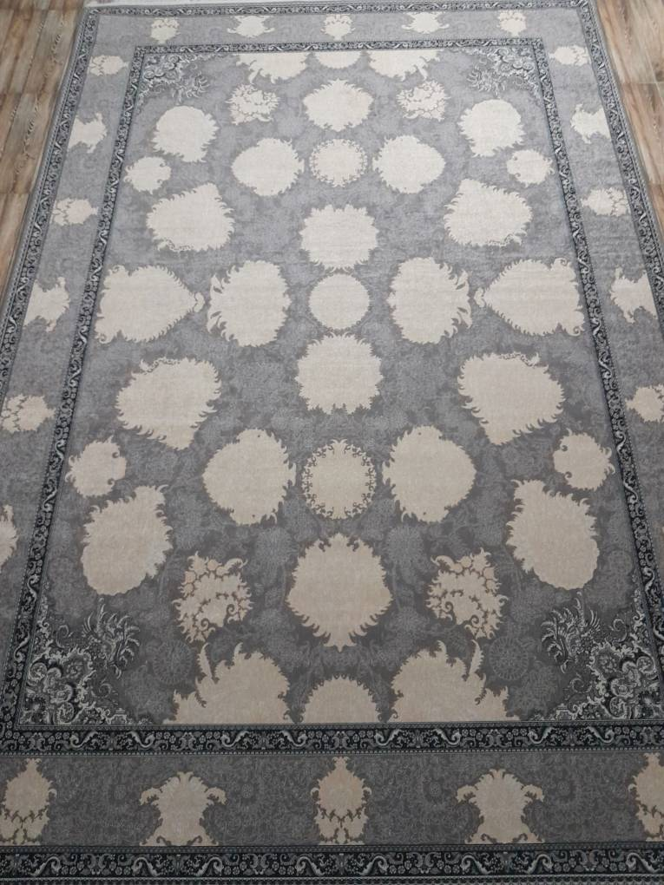
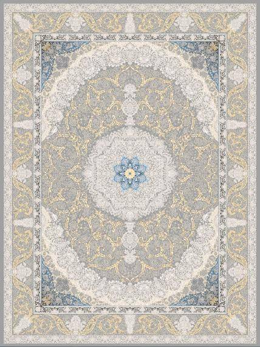

ما کی هستیم؟
برند ERiSH فعالیت خود را با هدف تولید و عرضهی فرشینههای باکیفیت، لطیف و مدرن آغاز کرد. محصولات ما با رویهی مخمل شنل ۹۵۰ گرم و نمد ۱۰۰۰ گرم تولید میشوند تا در کنار زیبایی، دوام بالایی هم داشته باشند.
✨ ماموریت ما: ایجاد حس زیبایی و آرامش در هر خانه ایرانی ✨
تیم ما

صحراپیما
مدیر و طراح اصلی مجموعه ERiSH

مریم احمدی
پشتیبانی و مشاور خرید